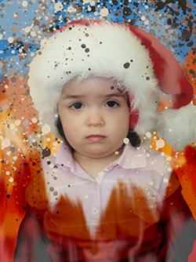

Myself Pre-Schooling
Today, I unveil a cherished relic from the vault of memory—a glimpse of my younger self, untouched by the weight of societal expectations, unmarred by the harsh lessons of media literacy, and unjaded by the crushing conformity of institutional education. Behold, a portrait of innocence, captured before I was thrust into the tumultuous sea of societal norms.
In this photograph, I am but a tender soul, standing on the precipice of childhood, oblivious to the impending storm of conformity that awaits. Little did I know, as the camera captured my unassuming visage, that I was but a pawn in the grand game of societal expectations, a game where creativity is stifled and individuality is sacrificed at the altar of conformity.
Before me lies the treacherous path of education—a path that promises enlightenment but often delivers only disillusionment. It is a path where young minds are molded into replicas of one another, where creativity is suffocated by the weight of standardized tests and rigid curricula.
Yet, in this moment frozen in time, I stand at the threshold of innocence and experience, my eyes reflecting the silent rebellion that simmers within. With a gaze that pierces through the veneer of societal norms, I silently declare my defiance, my refusal to be shackled by the chains of conformity.
As I stare into the lens of the camera, there is a flicker of rebellion in my eyes—a spark that ignites the flames of revolution within my soul. It is a defiance born of innocence, a defiance that whispers, "Let the world burn," as I stand before my birthday cake, its rainbow tiers a symbol of the vibrant creativity that society seeks to extinguish.
In the innocence of youth, I stand poised on the edge of discovery, unaware of the battles that lie ahead. But within me, there is a flame—a flame that refuses to be extinguished, a flame that will illuminate the darkness of conformity and ignite the fires of change.
So behold, this photograph—a testament to the resilience of the human spirit, a reminder that even in the face of adversity, there is beauty in defiance, and strength in rebellion. This is me, before the world tried to mold me into its image—a beacon of untamed creativity, a symbol of the unyielding spirit that refuses to be tamed.
